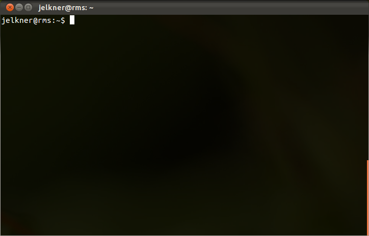

Computers are machines that can do amazing tasks for people, but to do so they need to be controlled by programs which instruct them step-by-step on what to do. A special program called the operating system is responsible for control and administration of the computer itself. Operating systems load other computer programs, control use of memory, input and output devices, and the processing units that make the computer work, and manage the storage and retrieval of data through the file system.
For human beings to interact directly with computers, some kind of technology must exist that allows people to express their intentions in a way that computers can understand. This technology is called a user interface.
If you learned to use a personal computer within the last twenty-five years or so, chances are you interacted with it using a graphical user interface, or GUI (pronounced gooey). The GUIs of common desktop operating systems are characterized by windows, icons, menus, and a pointer (mouse) that users manipulate to control the launching and operation of programs.
While GUIs certainly make computers easier to use for the average computer
user, they introduce greatly increased demands on the computer system, as well
as increased security and maintainance costs. On a personal desktop system this
tradeoff is worth the cost, but on a
server it is
frequently not. Instead, many servers use a
command-line
interface, or CLI instead of a GUI. Command-line interfaces
use text
commands
that users type at a
command prompt (which will be a $ on Ubuntu systems) to
control and manage files and applications.
A common CLI for websites is the Unix shell, which is the CLI that we will learn in this tutorial. Specifically we will be using the Bash shell. Bash is the default shell on most GNU/Linux systems and macOS. It is also now available to Windows 10 users as an add-on.
A Unix shell is a command-line interface to the Unix operating system. Many web hosting services give customers a unix shell as the way to manage their websites. This tutorial has been developed for users of the Ubuntu distribution of the GNU/Linux operating system, but it should prove useful to users of other versions of Unix as well.
To start a Unix shell from an Ubuntu GUI desktop environment, look for a
program named Terminal (or sometimes console or
xterm on other Unix systems). Launching this program will give
you a desktop window that looks something like this:

Colors may be different and you may see a menu and scrollbar, but the important elements of the terminal program are:
$ character is called the
command prompt. It
tells you that the Unix command-line interpreter is ready to read and
process commands.
Commands are
given to the Unix CLI by typing text at the command prompt. Here is an example
of the list (ls) command:
$ ls -la .bash*
This command has three distinct parts:
$) is the command to run,
which here is the ls (list) command. It displays a list
of files and directories in the current directory.-) or two dashes (--). In this example both the
a, all, and l, long options are specified, so a
list which includes files that start with . , normally not listed,
will be displayed in the detailed or long format..bash* argument means to only
list files that begin with .bash .
definitionsthat effectively summarize the meanings for your own use.
$ ls$ ls -a$ ls -la$ pwd